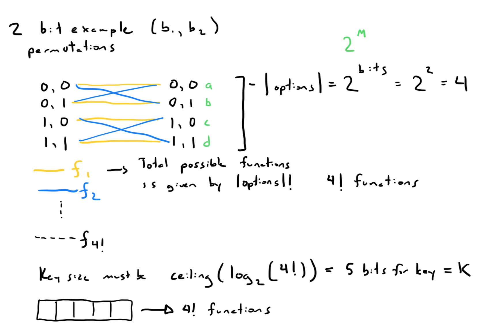
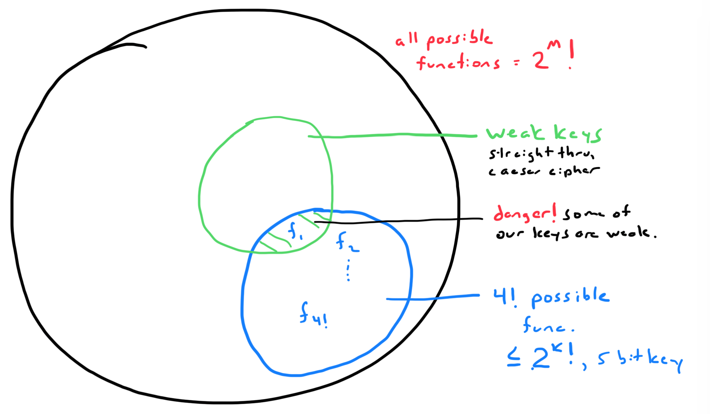

Ciphers
What are those things?¶
Ciphers are pairs of algorithms that take some kind of message and create a confidential message. A plaintext message and a key are given to an encryption function and ciphertext is produced from it. Ciphertext and a key are given to the decryption function and the plaintext is recovered.
Ciphers help prevent eavesdropping.
Common generic notation for ciphers is noted below.
Disambiguation¶
Stream Cipher vs Block Cipher¶
Stream ciphers and block ciphers differ in the amount of key and plaintext that are handled at any given time. A block tends to work with a fixed-length chunk of bits. A stream will handle bits one at a time with the key a bit at a time.
A weakness in a naively designed block cipher algorithms is when an attacker can see blocks that have been duplicatly encoded which reveals more information than we want to the attacker. A stream cipher wouldn't necessarily have the same problem because the symmetric key is turned into a arbitrary-length secret cipher stream.
The block cipher will also have to be padded if it isn't the correct length.
Symmetric Encryption vs Asymmetric Ecryption¶
In symmetric encryption, the parties share the same key.
In asymmetric encryption, the parties each have a key pair. They have an encryption public key, and a decryption private key.
Cipher Types¶
Vernam Cipher (stream)¶
The vernam cipher has four streams. It begins with a message stream and a key stream that are xor'd together to form the cipher stream. Then the cipher stream is again xor'd with the key stream to recover the output stream which should be the same as the original input message.
Electronic Cookbook (block)¶
This is the simplist of the block cipher approaches, and we've seen this in use by AES where it has it as a mode.
Each block and key are given to the encryption function to generate a ciphertext block and then that block and the key are given to the decryption function to recover the original block.
One of the benefits of this approach is that even if one of the blocks is lost we can still recover most of the message. When we look at the other chaining methods, we see they are not so lucky.
Cipher Block Chaining (block)¶
The chaining part of the name indicates that the input and output are connected in some way.
For Cipiher Block Chaining, the original message is XOR'd with the previous cipher text block or the initialization vector if it's the first block, and then the XOR'd block is passed into the encryption function.
In the opposite fashion, the cipher text block is passed to the decryption function and that output must be XOR'd with the previous cipher text block to then recover the original plain text.
Because the ciphertext is used during decryption it will affect the current block and the next block.
Note
Needs an Initialization Vector to start.
Output Feedback (block)¶
For Output Feedback, the output of the encryption function can be precomputed ahead of time. For Output Feedback these outputs are passed to the next encryption block before being XORd with the plaintext to produce the ciphertext.
Note
Initialization vector is required.
Cipher Feedback (block)¶
For Cipher Feedback these outputs are first XORd with the plaintext message to produce the cipher text and then also used as input to the next encryption call
Note
Initialization vector is required.
Counter Mode¶
Non-repudiation¶
A Look at the Function Space¶
 
{kind=link}
{kind=link}